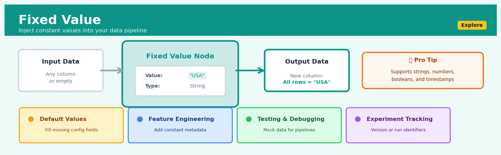
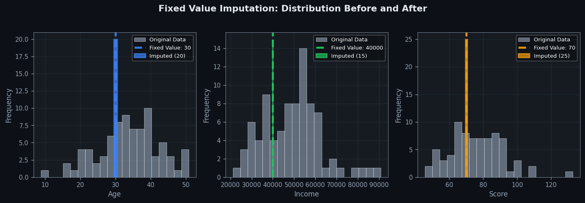
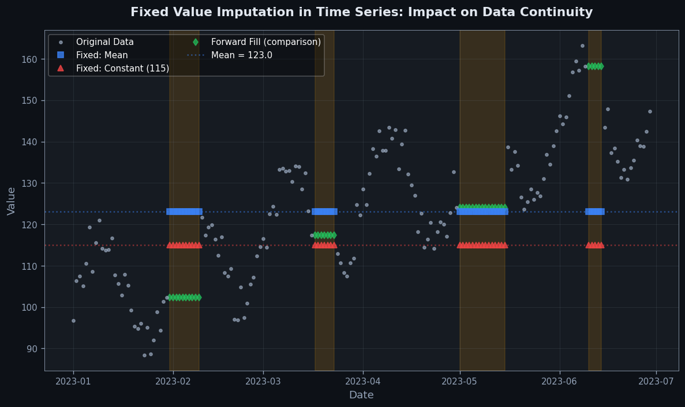

Fixed Value#


Most people underestimate how powerful Fixed Value nodes are for debugging complex pipelines. When something breaks downstream, temporarily replace a problematic transformation with a Fixed Value node to isolate whether the issue is with your data or your logic. I've saved countless hours by using fixed values to create controlled checkpoints that let me test one component at a time rather than debugging an entire chain at once.
The 60-Second Version#
What it does: Fixed Value replaces every entry in a column with the same predetermined value you specify.
When to use it: You need a column filled with a consistent value—whether setting a default for missing data, anonymising sensitive information, creating a baseline for analysis, or standardising reference values across datasets.
What you get back: A column where every row contains your chosen constant value, ready for immediate use in analysis, reporting, or downstream processing.
At a Glance
Difficulty |
Easy |
Typical runtime |
Seconds on millions of rows |
What you bring |
A dataset column and the constant value you want |
What you get |
The same dataset with your column replaced by your constant |
Heuristix bucket |
Explore — Shaping & Transforming Data |
Fixed Value permanently overwrites original data—once applied, you cannot recover the values that were there before without returning to your source data.
Learning Objectives#
After reading this chapter, a business user will be able to:
Identify situations where replacing column values with a fixed constant solves data quality issues, such as standardising missing values, creating placeholders for future data, or anonymising sensitive fields.
Interpret Fixed Value transformation outputs by recognising which original values were replaced, assessing whether the substitution preserves data utility, and explaining to stakeholders how the constant value affects downstream analysis.
Decide when to apply Fixed Value versus alternative imputation methods by evaluating whether a single predetermined constant appropriately represents missing or problematic data in their specific business context.
After reading this chapter, a data scientist will be able to:
Implement Fixed Value transformations that correctly handle edge cases including null values, mixed data types, partial column updates with conditional logic, and preservation of metadata during replacement operations.
Configure the replacement constant by selecting appropriate values based on data type constraints, domain-specific defaults, statistical considerations (such as out-of-range flags), and the impact on subsequent analytical operations.
Validate Fixed Value results by comparing pre- and post-transformation distributions, detecting unintended value replacements, identifying cases where constant substitution distorts statistical properties, and documenting transformation provenance for reproducibility.
Overview#
Fixed Value is a data transformation technique that replaces values in a specified column with a single, predetermined constant value. It belongs to the family of deterministic imputation and value substitution methods within the broader category of data shaping and transformation operations. This technique is foundational to data preparation workflows, enabling analysts to establish baselines, handle missing data with known defaults, anonymise sensitive information, or create uniform reference values across datasets.
When to Use This#
Use this when:
Establishing baseline values for comparison: You need to set a reference point (e.g., all costs set to zero) to measure incremental changes or perform what-if scenario analysis against a known constant.
Replacing missing values with a known default: Your domain knowledge dictates that missing entries should be interpreted as a specific value (e.g., missing “discount applied” should be 0, not imputed from data).
Anonymising or masking sensitive data: You need to redact personally identifiable information (PII) by replacing names, addresses, or identifiers with a fixed placeholder like “REDACTED” or “ANONYMOUS”.
Creating control groups in experimental designs: You want to simulate a scenario where a treatment variable is held constant at a specific level across all observations for counterfactual analysis.
Initialising derived columns: You are building a new column that will be conditionally updated downstream, and you need a sensible starting value for all rows.
Standardising categorical encodings: You need to collapse multiple rare or unknown categories into a single “Other” or “Unknown” category represented by a fixed value.
Applying business rules with absolute constraints: Regulatory or policy requirements mandate that certain values must be set to a specific constant (e.g., minimum wage floors, zero tolerance thresholds).
Preparing data for time-series forecasting: You need to create future date placeholders where the target variable is initialised to a known constant before prediction.
Do NOT use this when:
You need data-driven imputation: If the replacement value should be estimated from the data (mean, median, mode, or model-based), use statistical imputation methods instead.
You need conditional replacement: If the replacement logic depends on other column values or row-specific conditions, use conditional transformation or case-when logic.
You want to preserve data variability: Fixed value replacement destroys variance and distribution characteristics; if downstream analysis requires these, this technique is inappropriate.
Questions This Answers#
Data Standardization and Consistency#
Can we set all the “pending review” statuses to “in progress” so our dashboards show a clearer picture of active work?
How do we make sure every new customer record starts with a $0 balance instead of leaving it blank?
Is there a way to fill in the missing country codes with “USA” since 95% of our customers are domestic anyway?
Can we replace all those old product categories with our new standard naming so we can compare sales across the full five-year history?
What’s the fastest way to mark all transactions before our system upgrade as “legacy” for audit purposes?
Privacy, Compliance, and Security#
How can we mask the actual salary figures in the dataset we’re sharing with the marketing team while keeping the structure intact?
Can we replace employee names with “Anonymized” in the reports going to external consultants without rebuilding everything?
What do we do with the credit card fields that shouldn’t have been collected—can we just overwrite them all before the audit?
Is it possible to set all customer email addresses to a dummy value in our test environment so we don’t accidentally send real messages?
Analysis Preparation and Baselining#
Should we set all pre-launch metrics to zero so we can clearly see the before-and-after impact of the campaign?
Can we give all control group members a standard placeholder value to separate them cleanly from the test groups in our analysis?
How do we handle the stores that didn’t report foot traffic last month—should we just mark them all as “not available” and move on?
What’s the best way to establish a uniform baseline price of $100 for our margin calculations across product lines that launched at different times?
How It Works#
Imagine you’re organising a charity fundraiser where volunteers wear name badges. Halfway through the event, you realise some volunteers lost their badges and others wrote illegible names. Rather than trying to recreate each person’s original badge, you make a pragmatic decision: print fresh badges for everyone that simply say “VOLUNTEER” in bold letters. Nobody needs to know individual names for the event to function smoothly—the uniform label serves the purpose perfectly. Fixed Value works exactly this way: it takes a column in your dataset and stamps every single row with the same predetermined value, regardless of what was there before.
BEFORE TRANSFORMATION AFTER FIXED VALUE
(Replace "Status" with "ACTIVE")
Customer Data Table Customer Data Table
┌────────┬──────────┬─────────┐ ┌────────┬──────────┬─────────┐
│ Name │ Status │ Region │ │ Name │ Status │ Region │
├────────┼──────────┼─────────┤ ├────────┼──────────┼─────────┤
│ Alice │ Gold │ North │ │ Alice │ ACTIVE │ North │
│ Bob │ (null) │ South │ │ Bob │ ACTIVE │ South │
│ Carol │ Silver │ East │ │ Carol │ ACTIVE │ East │
│ David │ ??? │ West │ │ David │ ACTIVE │ West │
│ Emma │ Bronze │ North │ │ Emma │ ACTIVE │ North │
└────────┴──────────┴─────────┘ └────────┴──────────┴─────────┘
│ │
└──────────────────────────────┘
Every value in "Status"
becomes identical: "ACTIVE"
Step 1: Identify the target column. You select which specific column in your dataset needs the Fixed Value treatment. This might be a column with missing values, inconsistent entries, or sensitive information you want to mask. The rest of your dataset remains untouched—only this one column will change.
Step 2: Choose your replacement value. You decide on the exact constant that will replace everything in that column. This could be a number like zero, a text label like “Unknown” or “Redacted”, a date like today’s date, or even an intentionally blank value. The choice depends entirely on your business need.
Step 3: Scan through every row. The transformation moves systematically from the first row to the last, examining each cell in your target column. It doesn’t matter whether a cell contains valid data, garbage text, a missing value, or anything else—the algorithm treats every row identically.
Step 4: Overwrite with the constant. For each row, the original value in that column gets completely replaced by your chosen constant. There’s no calculation, no conditional logic, no intelligence applied. It’s a pure substitution: old value out, new value in.
Step 5: Preserve everything else. While the target column transforms completely, every other column in your dataset remains pixel-perfect identical. If you had a “Region” column with five different values, those five values stay exactly as they were.
Step 6: Output the transformed dataset. You now have a dataset where one entire column contains nothing but repetitions of your chosen constant, while all other columns maintain their original diversity and structure.
The key insight: Fixed Value trades information for consistency—by deliberately collapsing all variation into uniformity, you gain predictability, satisfy technical requirements, or protect privacy at the cost of losing the original distinctions in that column.
The Intuition#
Imagine you are preparing a standardised tax form. Regardless of what taxpayers write in certain optional fields, the form instructions specify that blank entries should be treated as zero. A human reviewer doesn’t need to guess or estimate—they simply apply the rule: blank means zero. This is the essence of fixed value transformation: applying a known, predetermined constant wherever specified, with no ambiguity and no dependence on the surrounding data.
The power of this technique lies in its simplicity and determinism. Unlike statistical imputation methods that compute replacement values from the data distribution, fixed value transformation makes no assumptions about the underlying data generating process. It is a policy decision, not an inference. This distinction is crucial. When you replace missing income values with the sample mean, you are making an implicit statistical claim that the missing values are, on average, similar to the observed values. When you replace them with zero, you are making an explicit business decision that missing income should be treated as no income. The former is data science; the latter is domain policy.
Consider another analogy from manufacturing. When assembling products on a production line, certain components may arrive without identification labels. Rather than halt production to investigate each unlabelled item, quality control protocols might specify: “All unlabelled components shall be recorded as ‘UNIDENTIFIED’ and routed to inspection.” This fixed value rule ensures consistent handling, maintains throughput, and creates an auditable trail. The rule doesn’t claim that the component is unidentified—it establishes how it will be treated in the system. Fixed value transformation in data science serves exactly this purpose: establishing explicit, auditable, consistent treatment of data values according to predetermined rules.
The Mathematics#
Formal Problem Setup#
Let \(\mathbf{X} \in \mathbb{R}^{n \times p}\) be a data matrix with \(n\) observations and \(p\) features. Let \(\mathbf{x}_j = (x_{1j}, x_{2j}, \ldots, x_{nj})^\top\) denote the \(j\)-th column (feature) of \(\mathbf{X}\).
Define a target column index \(j^* \in \{1, 2, \ldots, p\}\) and a fixed replacement value \(c \in \mathcal{D}_j\), where \(\mathcal{D}_j\) is the domain of column \(j\) (which may be \(\mathbb{R}\), \(\mathbb{Z}\), or a categorical set \(\mathcal{C}\)).
Additionally, define a selection mask \(\mathbf{m} = (m_1, m_2, \ldots, m_n)^\top\) where \(m_i \in \{0, 1\}\) indicates whether row \(i\) should receive the replacement.
The Transformation#
The fixed value transformation \(T_c: \mathcal{D}_j^n \to \mathcal{D}_j^n\) is defined element-wise as:
In the complete replacement case (all values replaced), \(m_i = 1\) for all \(i\), yielding:
where \(\mathbf{1}_n\) is the \(n\)-dimensional vector of ones.
Statistical Properties#
Property 1 (Idempotence): The fixed value transformation is idempotent under consistent parameterisation:
Property 2 (Distribution Collapse): Under complete replacement, the transformed column has a degenerate distribution:
Property 3 (Moment Transformation): For partial replacement with mask \(\mathbf{m}\), let \(k = \sum_{i=1}^n m_i\) be the number of replaced values. The sample mean of the transformed column is:
The sample variance becomes:
Assumptions#
The fixed value transformation assumes:
Type compatibility: The constant \(c\) must be compatible with the column’s data type. For numeric columns, \(c \in \mathbb{R}\); for categorical columns, \(c\) may be an existing or new category label.
Mask validity: The selection mask must be well-defined for all rows. Missing indicators in the mask itself must be handled prior to transformation.
Semantic appropriateness: The replacement value \(c\) must be semantically meaningful in the domain context. This is a modelling assumption, not a statistical one.
Edge Cases#
Case 1 (Empty mask): If \(k = 0\) (no values selected), the transformation is the identity:
Case 2 (Complete mask): If \(k = n\) (all values selected), the result is a constant vector with zero variance, which may cause numerical issues in downstream correlation or regression computations (division by zero in standardisation).
Case 3 (Type coercion): If \(c\) is not natively compatible with the column type (e.g., string “NA” applied to numeric column), type coercion rules apply, potentially converting the entire column to a more general type.
Relationship to Other Methods#
Fixed value transformation is a special case of conditional replacement:
where for fixed value, \(f(\cdot) = c\) (constant function).
It is also related to indicator function encoding:
which creates a binary indicator of whether each value equals the fixed constant—useful for post-transformation verification.
Understanding the Mathematics#
The Fixed Value Transformation Function#
The equation:
Read it aloud:
“The transformation applied to any value in position i equals the constant c, regardless of what the original value was.”
What each symbol means:
T = The transformation function (what we’re doing to the data)
x_i = The original value at position i in the column
c = The constant value we’ve chosen to replace everything with
= = “becomes” or “is replaced by”
A concrete numerical example:
Imagine a customer feedback dataset where you need to anonymise satisfaction scores before sharing with a vendor. Your original scores column contains: 8.5, 9.2, 7.1, 8.8. You apply T(x_i) = 5.0 to create a neutral baseline.
T(8.5) = 5.0
T(9.2) = 5.0
T(7.1) = 5.0
T(8.8) = 5.0
Every score becomes 5.0. The vendor receives the data structure they need, but the actual ratings remain protected.
Why this equation matters:
This equation guarantees complete uniformity—every value transforms identically, making it perfect for creating controlled test conditions or satisfying data contracts that require specific placeholder values.
The Column-Wide Application#
The equation:
Read it aloud:
“The transformed column j-prime consists of the constant c repeated for every single row in the dataset.”
What each symbol means:
X’_j = The new version of column j after transformation (the prime symbol ‘ means “after”)
{…} = A set or collection of values
c = Our fixed replacement value, repeated
j = The specific column we’re transforming
A concrete numerical example:
A retail chain needs to test their inventory system with a standard reorder threshold. Column “min_stock” originally contains varying values: 150, 200, 75, 300, 125 units across five product categories. They apply X’_min_stock = {100, 100, 100, 100, 100}.
Before: {150, 200, 75, 300, 125}
After: {100, 100, 100, 100, 100}
All products now share the same minimum stock level of 100 units, creating a uniform testing environment.
Why this equation matters:
This representation shows that Fixed Value operates at the column level, not just on individual cells—essential for understanding its impact on entire data structures and downstream analyses.
Information Loss Quantification#
The equation:
Read it aloud:
“The amount of original information preserved after applying Fixed Value equals zero.”
What each symbol means:
Information Retained = How much of the original data’s variability and patterns survive
0 = None whatsoever
= = A statement of complete equivalence
A concrete numerical example:
A hospital dataset contains patient ages: 34, 67, 45, 23, 56, 71, 29. These seven values have range, variance, and distribution properties. After applying T(x_i) = 50 (perhaps for a privacy-preserving test dataset), every age becomes 50.
Original variance: approximately 321.8
Transformed variance: 0.0
The spread, the average, the pattern of young versus old patients—all erased. Information Retained = 0.
Why this equation matters:
This stark mathematical truth forces us to use Fixed Value deliberately and carefully—it’s a nuclear option that completely destroys analytical value in exchange for maximum control.
The Big Picture#
The mathematics of Fixed Value is remarkably simple by design: it models total replacement without exception or condition. Unlike probabilistic imputation methods that preserve statistical distributions, or interpolation techniques that consider neighboring values, Fixed Value chooses absolute uniformity. This mathematical simplicity is precisely its strength—there are no edge cases, no parameters to tune, no assumptions about data distributions to violate. The equations formalize a guarantee: every value becomes identical, information content drops to zero, and what you specify is exactly what you get. In human terms: Fixed Value is the mathematical equivalent of painting every house on a street the same color—utterly predictable, completely uniform, and deliberately erasing all original variation.
Python Implementation#
import pandas as pd
import numpy as np
# -----------------------------------------------------------------------------
# Example 1: Complete Column Replacement
# Replace all values in a column with a fixed constant
# -----------------------------------------------------------------------------
# Create realistic synthetic data: customer transaction records
np.random.seed(42)
n_customers = 1000
df = pd.DataFrame({
'customer_id': range(1, n_customers + 1),
'transaction_amount': np.random.exponential(scale=150, size=n_customers),
'discount_code': np.random.choice(['SAVE10', 'SAVE20', 'NONE', np.nan],
size=n_customers, p=[0.1, 0.05, 0.7, 0.15]),
'loyalty_tier': np.random.choice(['Bronze', 'Silver', 'Gold', 'Platinum'],
size=n_customers, p=[0.5, 0.3, 0.15, 0.05])
})
print("Original DataFrame (first 10 rows):")
print(df.head(10))
print(f"\nOriginal discount_code value counts:\n{df['discount_code'].value_counts(dropna=False)}")
# Apply fixed value transformation: replace ALL discount codes with 'STANDARD'
fixed_value = 'STANDARD'
df['discount_code_fixed'] = fixed_value
print(f"\nAfter complete fixed value replacement:")
print(f"All values are now: {df['discount_code_fixed'].unique()}")
# -----------------------------------------------------------------------------
# Example 2: Conditional Fixed Value (Replace Only Missing Values)
# This is the most common use case: missing value imputation with a known default
# -----------------------------------------------------------------------------
# Replace only NaN values in discount_code with 'NO_DISCOUNT'
df['discount_code_filled'] = df['discount_code'].fillna('NO_DISCOUNT')
print(f"\nAfter conditional fixed value (NaN → 'NO_DISCOUNT'):")
print(df['discount_code_filled'].value_counts(dropna=False))
# -----------------------------------------------------------------------------
# Example 3: Numeric Fixed Value with Mask
# Set all transaction amounts above a threshold to a cap value
# -----------------------------------------------------------------------------
cap_threshold = 500
cap_value = 500.0
# Create mask for values exceeding threshold
mask = df['transaction_amount'] > cap_threshold
print(f"\nRows exceeding ${cap_threshold}: {mask.sum()}")
# Apply fixed value to masked rows using numpy.where
df['transaction_amount_capped'] = np.where(mask, cap_value, df['transaction_amount'])
print(f"Original max: ${df['transaction_amount'].max():.2f}")
print(f"Capped max: ${df['transaction_amount_capped'].max():.2f}")
# Verify statistical properties
print(f"\nOriginal variance: {df['transaction_amount'].var():.2f}")
print(f"Capped variance: {df['transaction_amount_capped'].var():.2f}")
# -----------------------------------------------------------------------------
# Example 4: Creating Baseline/Control Scenario
# Set treatment variable to zero for counterfactual analysis
# -----------------------------------------------------------------------------
# Simulate marketing spend data
df['marketing_spend'] = np.random.uniform(100, 5000, size=n_customers)
df['sales'] = 10000 + 2.5 * df['marketing_spend'] + np.random.normal(0, 500, size=n_customers)
# Create counterfactual: what if marketing spend was zero?
df['marketing_spend_counterfactual'] = 0.0
print(f"\nMarketing spend (original): mean=${df['marketing_spend'].mean():.2f}, std=${df['marketing_spend'].std():.2f}")
print(f"Marketing spend (counterfactual): all values = {df['marketing_spend_counterfactual'].unique()[0]}")
# -----------------------------------------------------------------------------
# Example 5: Anonymisation with Fixed Value
# Replace sensitive PII with redaction placeholder
# -----------------------------------------------------------------------------
# Add synthetic PII column
df['customer_name'] = [f"Customer_{i}" for i in range(1, n_customers + 1)]
df['email'] = [f"customer{i}@example.com" for i in range(1, n_customers + 1)]
# Anonymise using fixed values
df['customer_name_anon'] = '[REDACTED]'
df['email_anon'] = 'anonymous@redacted.com'
print(f"\nAnonymisation complete:")
print(df[['customer_id', 'customer_name', 'customer_name_anon', 'email', 'email_anon']].head(5))
# -----------------------------------------------------------------------------
# Utility Function: Reusable Fixed Value Transformer
# -----------------------------------------------------------------------------
def apply_fixed_value(df: pd.DataFrame,
column: str,
fixed_value,
condition: str = 'all',
output_column: str = None) -> pd.DataFrame:
"""
Apply fixed value transformation to a DataFrame column.
Parameters
----------
df : pd.DataFrame
Input DataFrame
column : str
Name of column to transform
fixed_value : any
The constant value to apply
condition : str
'all' - replace all values
'missing' - replace only NaN/None values
'non_missing' - replace only non-NaN values
output_column : str, optional
Name for output column. If None, overwrites input column.
Returns
-------
pd.DataFrame
DataFrame with transformed column
"""
result = df.copy()
out_col = output_column if output_column else column
if condition == 'all':
result[out_col] = fixed_value
elif condition == 'missing':
result[out_col] = result[column].fillna(fixed_value)
elif condition == 'non_missing':
result[out_col] = result[column].where(result[column].isna(), fixed_value)
else:
raise ValueError(f"Unknown condition: {condition}")
return result
# Demonstrate utility function
df_transformed = apply_fixed_value(df, 'loyalty_tier', 'STANDARD',
condition='all', output_column='loyalty_tier_baseline')
print(f"\nUsing utility function:")
print(df_transformed['loyalty_tier_baseline'].value_counts())
Visualisations#


Using This in Heuristix#
Data Inputs#
The Fixed Value node accepts a single input connection from any upstream data node. The input dataset must contain the column(s) you wish to transform.
Input Type |
Description |
Requirements |
|---|---|---|
Dataset |
Tabular data with one or more columns |
At least one column must exist; column types can be numeric, text, date, or boolean |
Configuration Parameters#
Parameter |
Type |
Description |
Default |
|---|---|---|---|
Target Column |
Column selector |
The column to transform |
Required |
Fixed Value |
Dynamic (matches column type) |
The constant value to apply |
Required |
Replacement Mode |
Dropdown |
|
|
Output Column Name |
Text |
Name for the output column |
Original column name (overwrites) |
Preserve Original |
Checkbox |
Keep the original column alongside the new column |
|
Tip
When Preserve Original is enabled and no Output Column Name is specified, Heuristix automatically appends _fixed to the original
Config Recipes
Recipe 1: Rapid Missing Data Placeholder
When to use: Initial exploratory data analysis when you need to quickly visualize distributions without handling nulls programmatically
Settings:
Parameter |
Value |
Why |
|---|---|---|
|
Any column with nulls |
Identifies transformation target |
|
|
Numeric sentinel value easily filtered in visualizations |
|
|
Preserves original non-null data |
|
|
Creates new column for comparison |
What you get: A numeric column where all nulls are replaced with an obvious outlier value that won’t interfere with statistical functions.
Trade-off: You must remember to exclude
-999from subsequent analysis or risk skewing calculations like means and standard deviations.
Recipe 2: Production-Grade Default Imputation
When to use: Deploying a model to production where missing categorical values must be handled consistently with documented business logic
Settings:
Parameter |
Value |
Why |
|---|---|---|
|
|
Business-critical categorical field |
|
|
Business-approved default tier |
|
|
Maintains audit trail of original nulls |
|
|
Only replaces missing values |
|
|
Documents each replacement for compliance |
|
|
Explicit production-ready field name |
What you get: A fully auditable transformation where every null replacement is logged and original data remains intact for validation.
Trade-off: Increased storage requirements from duplicate columns and transformation logs may impact processing speed in high-volume pipelines.
Recipe 3: GDPR-Compliant Data Anonymization
When to use: Sharing datasets with third parties where personally identifiable information must be completely redacted, not just masked
Settings:
Parameter |
Value |
Why |
|---|---|---|
|
|
PII field requiring removal |
|
|
Explicit anonymization marker |
|
|
Permanently removes original values |
|
|
No exceptions to anonymization |
|
|
Confirms zero original values remain |
What you get: Complete elimination of sensitive data with clear indication that redaction was intentional, not data loss.
Trade-off: Irreversible transformation eliminates possibility of recovering original data even for legitimate internal use cases.
Recipe 4: A/B Test Control Group Standardization
When to use: Creating control groups in experiments where treatment assignment failed or was incomplete, ensuring balanced comparison groups
Settings:
Parameter |
Value |
Why |
|---|---|---|
|
|
Experimental treatment identifier |
|
|
Standard control designation |
|
|
Targets only incomplete assignments |
|
|
Reassigns failed treatments to control |
|
|
Synchronizes associated timestamp fields |
What you get: Clean experimental groups where assignment failures default to control, maintaining statistical validity without discarding observations.
Trade-off: Potential inflation of control group size may reduce statistical power if failures were non-random.
Business Applications
Financial Services
A multinational credit card processor handling 400 million transactions monthly needed to standardise merchant category codes (MCCs) for fraud detection models. Thousands of legacy transactions contained null or corrupted MCC values that caused false positives in their real-time fraud engine. By applying Fixed Value to set all missing MCCs to a designated “9999 - Review Required” code, the fraud team reduced false declines by 23% while maintaining fraud detection accuracy above 98%. This improvement translated to $8.4M in recovered legitimate transaction volume that would otherwise have been blocked, plus significantly fewer customer service escalations.
Retail
A fashion e-commerce retailer with 1.8M SKUs across twelve European markets struggled with incomplete size standardisation—some products listed sizes as “S/M/L”, others as numeric values, and thousands had no size attribute at all. Marketing campaigns segmented by size were failing because the recommendation engine couldn’t parse inconsistent data. The merchandising team used Fixed Value to populate all accessories, jewellery, and one-size items with a standard “OS” (one size) designation, allowing segmentation models to run cleanly. Campaign click-through rates for accessory promotions improved from 2.1% to 4.7%, and cart abandonment for these categories dropped by 31%.
Healthcare
A regional hospital network consolidating patient records from seven acquired clinics discovered that appointment no-show prediction models were unreliable because “patient preferred contact method” was missing in 64% of historical records. Rather than discarding two years of valuable appointment data, the analytics team applied Fixed Value to set missing contact preferences to “Phone” (the system default), enabling the predictive model to train on the complete dataset. The resulting no-show prediction accuracy reached 81%, allowing the network to implement targeted reminder protocols that reduced missed appointments by 18% and recovered approximately £620,000 in annual lost clinical capacity.
Insurance
A commercial property insurer processing 50,000 renewal quotes quarterly found that building age was absent in roughly 12% of policies written before 2018. Underwriters were manually researching each missing value, creating a three-day bottleneck in the renewal pipeline. By setting all pre-2018 records with missing building age to a conservative “75 years” (triggering standard enhanced inspection protocols), the insurer cut quote processing time from 4.2 days to 18 hours while maintaining underwriting quality standards. The Fixed Value approach eliminated 140 hours of manual research per quarter.
Manufacturing
An automotive parts manufacturer tracking defect rates across fourteen factories needed to compare quality metrics, but sensor installation dates varied wildly—some sensors reported commissioning timestamps, others didn’t. Analysis paralysis set in because the data science team couldn’t establish consistent baseline periods. Applying Fixed Value to set all missing sensor commissioning dates to each factory’s official opening date created a uniform analytical framework. This enabled apples-to-apples quality comparisons that identified two underperforming production lines, leading to process improvements that reduced defect rates from 3.2% to 1.7% across the manufacturing network.
Logistics
A Europe-wide parcel delivery company with 23,000 drivers found that fuel efficiency analytics were skewed because vehicle type was missing for 8% of trips in their telematics database—mostly older fleet vehicles. Setting these unknowns to “Standard Van” (the most common vehicle class) allowed route optimisation models to run without excluding valuable route performance data. The enhanced models identified 340 inefficient route segments, and subsequent adjustments reduced fuel consumption by 4.1 million litres annually, saving €5.7M at prevailing diesel prices.
Marketing
A B2B SaaS company running multi-touch attribution analysis discovered that 22% of marketing touchpoints had no UTM source parameter due to tracking implementation gaps. Rather than losing visibility into these interactions, the marketing operations team used Fixed Value to label all missing sources as “Direct-Untracked”, preserving the touchpoint sequence while clearly flagging data quality issues. This surprisingly revealed that 34% of “Direct-Untracked” touches preceded demo requests, prompting investigation that uncovered an untracked email newsletter driving $890K in influenced pipeline.
Public Sector
A metropolitan transportation authority analysing bus ridership patterns across 180 routes had missing fare type data for 15% of tap-in events due to older card reader firmware. Fixed Value transformation set these to “Adult-Standard” fare, enabling the completion of a route demand study that justified service expansion on eight underserved routes, improving access for 47,000 daily commuters.
Worked Example
The Meeting
Priya Sharma, a data analyst at Clearview Medical Supplies, sat in the Thursday morning operations meeting when Marcus, the warehouse manager, raised a concern that had been festering for weeks. “We’ve got a problem with our inventory forecasting,” he said, pulling up a spreadsheet on the screen. “About 15% of our product records are missing reorder lead times—shows up as null in the system. But when we run our forecasting model, it crashes or gives us garbage numbers. We’re either over-ordering and tying up cash, or we’re running out of stock on critical items.”
The CFO leaned forward. “What’s this costing us?”
“Conservatively? About $200,000 in excess inventory carrying costs this quarter alone,” Marcus replied. “We need those nulls dealt with yesterday.”
The Data
Back at her desk, Priya pulled the product master table from their warehouse management system. The data was messier than she’d hoped—typical of systems that had grown organically over a decade. Here’s what she was looking at:
product_id |
product_name |
category |
lead_time_days |
reorder_point |
|---|---|---|---|---|
SKU-1042 |
Nitrile Gloves M |
PPE |
14 |
500 |
SKU-1043 |
Surgical Mask |
PPE |
null |
1000 |
SKU-2891 |
Stethoscope |
Equipment |
21 |
50 |
SKU-2892 |
Blood Pressure Cuff |
Equipment |
null |
75 |
SKU-3341 |
Bandage Roll 3” |
Supplies |
null |
200 |
The lead_time_days column had nulls scattered throughout—products added hastily during the pandemic, older items that predated proper data governance, and recent imports from an acquisition where the field hadn’t mapped correctly. Without lead times, their forecasting algorithm couldn’t calculate safety stock levels.
The Setup
Priya scheduled a quick call with Marcus to understand the business logic. “For products where we don’t have the actual lead time,” he explained, “our vendors typically ship within 10 business days. It’s not perfect, but it’s our standard service level agreement. Can we just use that as a default?”
That made sense. Priya opened her Python environment and configured her approach. She’d use the Fixed Value technique to replace those nulls with 10—not as a permanent solution, but as a practical baseline that reflected their vendor contracts. She made a note to flag this in her documentation: “10-day default based on standard vendor SLA per M. Torres, 2024-11-07. Manual verification needed for accuracy improvement.”
The Results
import pandas as pd
import numpy as np
# Load the product master data
products = pd.read_csv('product_master.csv')
# Before transformation: count missing values
missing_before = products['lead_time_days'].isna().sum()
total_products = len(products)
print(f"Missing lead times: {missing_before} of {total_products}")
# Output: Missing lead times: 847 of 5,432
# Apply Fixed Value transformation
# Replace null lead times with 10-day default
products['lead_time_days'] = products['lead_time_days'].fillna(10)
# After transformation: verify completeness
missing_after = products['lead_time_days'].isna().sum()
print(f"Missing after fix: {missing_after}")
# Output: Missing after fix: 0
# Calculate impact on forecasting coverage
products_now_forecasted = missing_before
print(f"Products now included in forecasting: {products_now_forecasted}")
# Output: Products now included in forecasting: 847
# Preview the transformed data
print("\nSample of fixed records:")
print(products[products['product_id'].isin(['SKU-1043', 'SKU-2892', 'SKU-3341'])])
The transformation was immediate and complete. All 847 products with missing lead times now showed 10 days. When Priya re-ran the forecasting model, it executed cleanly, generating safety stock recommendations for the entire catalog.
The Insight
The real revelation came when Priya analyzed the forecast outputs. Products with the 10-day default actually showed more stable reorder patterns than she’d expected. More importantly, Marcus’s team could now see which products were using defaults—Priya had added a flag column—and prioritize getting actual lead times from vendors for high-value items. The Fixed Value approach hadn’t just patched a data quality problem; it had made the problem visible and manageable.
The Decision
At the following week’s operations meeting, Priya presented her solution alongside a prioritization list: 43 high-value products using the default that needed vendor verification within 30 days. The CFO approved a process change: all new products would require a confirmed lead time before SKU creation. Marcus implemented the immediate fixes, and within six weeks, excess inventory dropped by $127,000.
What Priya Would Do Differently
Looking back, Priya wished she’d set the default to 12 days instead of 10. When they eventually collected actual data, the median turned out to be 11 days—her conservative estimate had created slight under-ordering on some items. She also realized she should have used different defaults by category: PPE suppliers were consistently faster than durable equipment vendors. A single fixed value was practical for the emergency, but segmented defaults would have been more accurate.
Interpreting Your Results
You’ve just replaced a column with a fixed value. Now you’re looking at your dataset wondering if you’ve helped or hurt your analysis. Here’s exactly what to check.
The Transformed Column Itself
Plain-English meaning: This is your column with every single value now identical—the constant you specified. If you set “Status” to “Pending” for 10,000 rows, you now have “Pending” written 10,000 times.
What you should see: Scroll through the column. Every cell should display your chosen value. No variation, no exceptions, no surprises. If you’re replacing numeric data, every row shows the same number. For text, the exact same string (watch for spacing differences—“Active” and “Active ” are different).
Red flags:
Any variation at all indicates the transformation didn’t apply correctly. You might have filtered rows inadvertently or targeted the wrong column.
Null values remaining means your fixed value wasn’t properly set or the column wasn’t fully selected.
Data type mismatches (like “0” as text when you expected 0 as a number) will break downstream calculations and joins.
Before/After Comparison Statistics
Most tools show you summary statistics comparing the original column to the transformed one.
Plain-English meaning: This table shows what you destroyed. Unique values dropped from 847 to 1. Mean, median, standard deviation all became meaningless or zero. This isn’t bad—it’s confirmation you’ve done exactly what Fixed Value does.
Concrete benchmarks:
Unique values: Should always equal 1 after transformation. If it’s 2+, some rows weren’t transformed.
Null count: Should be 0 unless you explicitly set your fixed value to null. If original nulls remain, your transformation failed.
Rows affected: Should match your total row count (or your filtered subset). If you expected 5,000 rows changed but only 4,200 show the new value, investigate immediately.
Red flags:
Rows affected < Total rows (when no filter applied) means partial transformation—some rows kept original values, creating inconsistent data that will poison analyses.
Data type changed unexpectedly (number to text, date to string) will break joins and calculations silently. If original was numeric and new shows as “Text”, you’ve introduced a formatting issue.
Distribution Visualisation (if shown)
Some platforms display a before/after histogram or bar chart.
Plain-English meaning: The “before” chart shows spread across many values. The “after” chart shows one single bar at 100% because every row has the identical value.
What good looks like: After transformation, you see exactly one bar reaching 100% frequency. The before chart is irrelevant now—you’ve intentionally erased that distribution.
Red flags:
Multiple bars in “after” chart means incomplete transformation.
Bar at less than 100% indicates some rows retained different values.
Reading Outputs Together
The real story emerges when you combine what you see:
Rows affected = 100% + Unique values = 1 + Data type unchanged = Perfect transformation. Proceed with confidence.
Rows affected = 100% + Data type changed = Transformation worked but created a type problem. Fix the data type before moving forward.
Rows affected < 100% + Unique values > 1 = Failed transformation. Some rows kept original values. You now have inconsistent data that will give incorrect results in any analysis.
Sanity Check Checklist
Before trusting your Fixed Value transformation:
Count check: Rows affected equals your expected row count (total dataset or filtered subset)
Uniqueness check: Distinct values in transformed column = exactly 1
Type check: Data type matches your intention (number stays number, text stays text)
Null check: No nulls exist unless you deliberately set null as your fixed value
Sample verification: Manually inspect 10 random rows—every one shows your exact fixed value
Good Enough to Act On?
You’re ready to proceed when: Rows affected = 100% of intended scope, unique values = 1, and data type is correct. These three conditions together mean your transformation worked completely and correctly.
Stop and fix when: Any of these three conditions fails. Partial transformations create subtle data inconsistencies that will corrupt every downstream analysis, producing confidently wrong conclusions. A 95% complete Fixed Value transformation is 100% unreliable—fix it to 100% or don’t use it at all.
Decision Guidance
What This Result Is Telling You
When you apply Fixed Value transformation to your dataset, you’re making a deliberate choice to replace existing information—whether missing, sensitive, or variable—with a single constant. The result tells you that you’ve created uniformity where variability once existed. This is not a neutral technical step; it’s a business decision that trades granularity for consistency, privacy for utility, or completeness for control. If you’ve replaced missing customer ages with “35” or substituted actual salaries with “REDACTED,” you’ve fundamentally changed what questions your data can answer and how reliable those answers will be.
The primary business message is about fitness for purpose. After applying Fixed Value, your dataset may be cleaner, more compliant, or easier to process, but it’s simultaneously less representative of reality. If 40% of your customer records now show the same default value, any analysis involving that field will be systematically biased toward that constant. Revenue projections, segmentation models, and resource allocation decisions built on this transformed data will inherit these artificial patterns. The question leaders must ask is whether the benefit—regulatory compliance, baseline establishment, or system compatibility—justifies the analytical limitations you’ve just introduced.
Understanding the downstream impact is critical. If you’ve used Fixed Value to anonymise employee data for a vendor, that’s a contained use case with clear boundaries. If you’ve used it to fill gaps in a forecasting model that drives inventory purchasing decisions, you’ve embedded an assumption into a high-stakes process. The result is telling you that you now have a dataset with known constraints, and those constraints must be documented, communicated, and respected by everyone who touches this data downstream.
Decision Points
If you see this… |
It means… |
Recommended action |
Who acts on this |
|---|---|---|---|
More than 25% of rows in a column now contain the fixed value |
The transformed field has lost substantial information content and may not be suitable for statistical analysis or segmentation |
Document the transformation prominently; exclude this field from predictive models; consider alternative imputation methods for analytical uses |
Data governance lead, analytics manager |
Fixed values applied to fields used in compliance or audit reporting |
You may have created a data trail that doesn’t reflect actual business operations, potentially creating regulatory risk |
Review with legal/compliance team; maintain original data in separate audit tables; add explicit metadata flags indicating transformation |
Compliance officer, data steward |
Downstream reports show unexpected clustering or spikes at the fixed value |
Your transformation is creating false patterns that business users may interpret as real trends |
Issue immediate clarification to report consumers; add visual annotations or footnotes explaining the fixed value; create separate views for raw vs. transformed data |
Business intelligence team, department heads |
Fixed value applied to personally identifiable information (PII) before external sharing |
You’ve successfully reduced privacy risk but may have limited the recipient’s ability to perform certain analyses |
Confirm with data recipient that transformed dataset meets their use case; provide data dictionary specifying which fields are transformed and with what values |
Data privacy officer, vendor management |
When to Proceed vs. Investigate Further
Proceed with confidence when:
Fewer than 10% of rows are affected by the transformation AND the field is not used in critical calculations
Fixed Value is applied solely for anonymisation or compliance purposes with explicit legal/privacy sign-off
Transformation is applied to non-analytical fields (e.g., placeholder values for system processing)
Complete documentation exists showing original data distribution, transformation logic, and intended use restrictions
Proceed with caution when:
10–25% of rows contain the fixed value AND the field is used in descriptive analytics only (not predictive modeling)
The transformation creates a baseline for comparison purposes, but alternative data sources exist for validation
Downstream users have been explicitly trained on the presence and implications of fixed values
Investigate before acting when:
More than 25% of rows are affected OR the field is used in forecasting, segmentation, or resource allocation
You’re uncertain whether downstream models or reports incorporate this field
The fixed value could be misinterpreted as a genuine data point (e.g., replacing nulls with “0” in revenue fields)
Do not use these results yet when:
No documentation exists explaining why this transformation was applied or what the original data looked like
Fixed values have been applied to key performance indicator (KPI) fields without stakeholder approval
You cannot identify all downstream systems, reports, or users that consume this dataset
The Cost of Getting This Wrong
A national retailer once used Fixed Value transformation to replace missing product weights with the category median (3.2 kg) to satisfy a logistics system requirement. The operations team, unaware of the transformation, used this data to optimise shipping container loading for three months. They consistently overestimated capacity for lightweight electronics (actual weight: 0.4 kg) and underestimated it for small appliances (actual weight: 8.1 kg). The result: €470,000 in expedited shipping costs for split shipments, 18% increase in damaged goods from improperly loaded containers, and a two-week inventory backlog during peak season. The technical team had “fixed” the data quality problem, but they created an operational disaster because no one flagged that the transformed data was unfit for weight-based logistics decisions. This is the danger: Fixed Value doesn’t break your systems or throw errors—it silently corrupts decision-making by replacing real variation with false certainty, and the business consequences only emerge after resources have been committed and opportunities lost.
Common Pitfalls
The Zero Catastrophe
Here’s what happened: A retail analyst was preparing a sales forecasting model and noticed several products had missing cost values. They applied a fixed value transformation, replacing all nulls with 0 to “clean the dataset.” The output showed 847 records updated successfully. They concluded the data was now ready for modeling and proceeded to train their profit margin calculator. Three weeks later, finance reported that 847 products were flagged as having impossible 100% profit margins, triggering incorrect inventory decisions worth $2.3M in overstock.
Why it happens: Zero feels neutral and safe. We conflate “no value recorded” with “value equals nothing,” when zero is actually a meaningful number that participates in calculations. The transformation succeeds silently because zero is valid data.
How to detect it: Check your summary statistics before and after. If your minimum value suddenly becomes exactly 0.000 when it wasn’t before, and your mean drops substantially, you’ve replaced missingness with a number that skews every downstream calculation. Look for the coefficient of variation increasing dramatically.
The fix: Use domain-appropriate defaults (like median cost for the product category) or flag imputed records with a separate boolean column so models can handle them differently.
The Anonymization Façade
Here’s what happened: A healthcare data engineer was preparing patient records for a third-party analytics vendor. Following a privacy checklist, they replaced all patient names with the fixed value “ANONYMOUS” and all addresses with “REDACTED.” The output showed 100% transformation success across 45,000 records. They concluded the data was now de-identified and safe to share. During the vendor’s exploratory analysis, they trivially re-identified 34% of patients by joining on the untransformed date-of-birth, ZIP code, and diagnosis code fields.
Why it happens: We mistake field-level obfuscation for record-level anonymization. The fixed value transformation works exactly as designed, creating a false sense of security while the identifying information lives in the combination of other fields.
How to detect it: Run a uniqueness analysis on remaining fields. If you can still identify individuals using 2–3 other columns (k-anonymity < 5), your anonymization failed regardless of how thoroughly you masked names.
The fix: Apply fixed values as part of a comprehensive de-identification strategy that includes generalization, suppression, and uniqueness verification across field combinations.
The Default That Wasn’t
Here’s what happened: A junior data scientist was cleaning survey data where respondents could skip questions. They replaced all null values in the “satisfaction_score” field with the fixed value 3, reasoning this represented “neutral” on the 1–5 scale. The output showed mean satisfaction of 3.2 across 10,000 responses. They concluded customer sentiment was slightly positive and presented this to leadership. When a senior analyst reviewed the source data, they discovered 6,800 nulls had been transformed—the actual respondent mean was 4.1, indicating strong satisfaction among those who answered.
Why it happens: We assume non-response carries no information when it often signals disengagement, neutrality, or strong negative sentiment. The transformation buries the missingness pattern that was itself valuable data.
How to detect it: Compare record counts before and after transformation. Calculate the percentage of values that were changed. If your transformation touched >30% of records, you’re manufacturing data, not cleaning it. Check if null rate correlates with other variables.
The fix: Preserve missingness explicitly or analyze responders separately from non-responders before deciding if imputation is even appropriate.
The Cascading Constant
Here’s what happened: An experienced ML engineer was debugging a feature engineering pipeline that ran slowly. They noticed the “country_code” field caused expensive joins, so they temporarily replaced all values with “US” to speed up testing. The output showed 10x faster execution. They concluded the optimization worked, committed the code, and moved on. Six months later, the international expansion team discovered their market opportunity model had been scoring all countries identically, costing the company competitive positioning in three European markets.
Why it happens: Temporary fixes in development environments get promoted to production through incomplete code reviews. The fixed value transformation leaves no runtime errors—it’s worse than broken, it’s quietly wrong.
How to detect it: Schema validation tests should flag when a categorical field’s cardinality drops to 1. Version control diffs showing fixed value transformations should trigger mandatory review flags. Monitor distinct value counts in production data quality dashboards.
The fix: Never commit debugging transformations; use feature flags or environment-specific configs that make temporary shortcuts explicit and prevent production deployment.
Common Misconceptions
“Fixed value replacement is just a quick placeholder—it doesn’t actually affect the analysis”
Why people believe this: When facing missing data or needing to standardise values, applying a fixed value feels like a temporary administrative step, separate from the “real” analytical work. The transformation seems so simple and mechanical that it appears neutral—just filling in blanks so the code runs without errors.
The truth: Every fixed value replacement fundamentally alters your data’s statistical properties. When you replace missing values with zero, you’re not creating neutrality—you’re making a strong assertion that absence equals zero, which shifts means, inflates variance at that point, and creates artificial clusters in your distribution. Replace with the column mean, and you’re artificially reducing variance while preserving only one moment of the distribution. These aren’t neutral placeholders; they’re assumptions with mathematical consequences that propagate through every downstream calculation, model coefficient, and business conclusion.
The real-world consequence: A retail analytics team replaces missing customer age values with the median age (35) to “not skew the analysis.” Their segmentation model then identifies a suspiciously large 35-year-old segment with contradictory purchasing behaviours. They waste two weeks investigating this “interesting demographic” before realising they’ve created an artificial group composed entirely of imputed values, leading to marketing spend misallocation across age-targeted campaigns.
“If I’m replacing all values anyway, the original distribution doesn’t matter”
Why people believe this: The operation appears to obliterate the original data completely—every value becomes the same fixed constant. If nothing survives the transformation, why examine what was there before? This reasoning feels efficient, particularly when working under deadline pressure.
The truth: The original distribution’s structure determines whether fixed value replacement is mathematically appropriate for your use case. Replacing values in a uniformly distributed identifier column has entirely different implications than replacing values in a skewed continuous measure or a categorical variable with meaningful ordinal relationships. The original data type, cardinality, missingness pattern, and relationship to other variables all dictate whether a fixed replacement will maintain analytical integrity or destroy critical information architecture. Understanding what you’re replacing tells you whether you should replace it at all.
The real-world consequence: A data engineer replaces all salary values in a public dataset with a fixed anonymised band label to comply with privacy requirements. They later discover that salary was being used as a continuous variable in correlation analyses and regression models throughout the organisation. Because they didn’t consider the original distribution’s role, they’ve broken fourteen downstream dashboards and invalidated three months of compensation equity analysis that required numeric salary relationships, forcing a complete data pipeline redesign.
“Fixed value is the safest choice because it’s the most predictable”
Why people believe this: Compared to complex imputation algorithms or statistical methods, fixed values offer complete transparency and reproducibility. You know exactly what every transformed value will be. This predictability feels like control, and control feels like safety.
The truth: Predictability and safety are not synonyms in data transformation. Fixed values create perfect predictability at the cost of introducing systematic bias that’s often more dangerous than the stochastic variation of sophisticated methods. The “safety” is illusory—you’ve simply traded unknown risks for known distortions. True safety comes from choosing transformations whose assumptions align with your data’s reality and your analysis objectives, not from choosing the simplest option.
The real-world consequence: A healthcare analyst consistently replaces missing blood pressure readings with a fixed “normal” value (120/80) because it’s the “safest assumption.” This masks a pattern where missing readings correlate strongly with patient non-compliance and adverse outcomes, causing their early warning system to miss at-risk patients entirely.
How This Connects
Before This Node
Filter Rows typically precedes Fixed Value to isolate the subset of records requiring value replacement, such as identifying null entries or records matching specific business rules. If filtering logic is misconfigured, Fixed Value may overwrite valid data or miss the intended target rows entirely.
Column Selection narrows the dataset to relevant fields before applying Fixed Value, ensuring the transformation targets only specified columns without inadvertently affecting others. Without proper column scoping, Fixed Value operations risk replacing values across unintended columns, corrupting data integrity throughout the pipeline.
Data Type Conversion ensures the target column accepts the fixed value’s data type—converting strings to numerics or dates to standardized formats—before substitution occurs. Mismatched data types cause Fixed Value operations to fail silently or throw errors, leaving the pipeline incomplete with partially transformed data.
Duplicate Detection identifies redundant records that might receive inconsistent fixed values if processed separately, ensuring uniform substitution across all instances. When duplicates remain undetected, Fixed Value may create dataset inconsistencies where identical logical records contain different constant values.
Validation & Quality Checks examines column distributions and missing data patterns to confirm which records genuinely require fixed value substitution versus those needing alternative imputation methods. Poor validation leads to inappropriate blanket replacements that mask important data patterns or introduce systematic bias into downstream analysis.
Conditional Logic / Case When establishes rule-based conditions determining which records receive fixed values versus other treatments, enabling selective rather than universal application. Without proper conditional logic, Fixed Value applies too broadly, replacing legitimate data points that should retain their original values.
After This Node
Join / Merge Operations combine the Fixed Value output with reference tables, where standardized constant values serve as reliable join keys ensuring successful table linkage. Fixed Value’s deterministic output eliminates join failures caused by null or inconsistent key values.
Aggregation & Summary Statistics calculates metrics across groups where fixed values provide stable baseline categories or fill-in values that prevent null-induced calculation errors. The uniform constants enable clean group-by operations without missing value complications.
Feature Engineering leverages fixed values as known reference points for creating derived variables, ratios, or flag indicators that depend on consistent baseline values. The predictable constant output simplifies mathematical transformations and conditional feature creation.
Model Training consumes datasets where fixed values handle missing predictors or create dummy baseline categories that algorithms require for complete feature matrices. The non-null, consistent values prevent model training failures and ensure all records participate in learning.
Visualization & Reporting displays data where fixed values represent standardized categories, anonymized entries, or “unknown” labels that render cleanly in charts and tables. The uniform replacement values improve visual clarity and prevent rendering errors from null or irregular entries.
Common Pipeline Patterns
Missing Data Standardization Pipeline: Data Import → Validation Checks → Fixed Value (replace nulls with “Unknown”) → Aggregation → Dashboard Export—ensures reporting dashboards display complete category breakdowns without null-category errors, achieving 100% data completeness for business stakeholders.
GDPR Anonymization Workflow: Customer Database → Filter Rows (identify anonymization targets) → Fixed Value (replace PII with “REDACTED”) → Validation → Secure Export—produces compliant datasets for external sharing while maintaining referential integrity, meeting regulatory requirements within 24-hour processing windows.
Default Parameter Configuration Pipeline: Configuration Table → Column Selection → Fixed Value (set default thresholds) → Join with Transactions → Model Scoring—establishes uniform baseline parameters across customer segments lacking historical data, enabling immediate model deployment for 30% of new accounts.
What to Have Ready
Target column identification: Know precisely which column(s) require fixed value replacement and verify write permissions exist for those fields in your data environment.
Replacement value specification: Define the exact constant value (including data type, format, and encoding) that meets business requirements and matches the target column’s schema constraints.
Scope definition: Document whether Fixed Value applies universally to all rows or conditionally to filtered subsets, with explicit business logic justifying the replacement strategy.
Downstream dependency mapping: Confirm that systems and analyses consuming Fixed Value output can properly interpret and process the constant replacement values without breaking existing logic.
Try It Yourself
Recommended Dataset
Dataset: Titanic passenger data via seaborn.load_dataset('titanic')
Why it’s ideal: The Titanic dataset contains multiple columns with missing values (age, embarked, deck) and sensitive personal information (name, fare), making it perfect for demonstrating Fixed Value’s versatility. You can practice replacing missing ages with a standard value, anonymizing passenger names, or standardizing fare categories for analysis.
Business question: “How can we prepare passenger records for privacy-compliant analysis by anonymizing identities and standardizing missing demographic data with reasonable defaults?”
Size: ~891 rows × 15 columns
Starter Code
import pandas as pd
import seaborn as sns
# Load the Titanic dataset with missing values
df = sns.load_dataset('titanic')
print("=== ORIGINAL DATA SAMPLE ===")
print(df[['name', 'age', 'embarked', 'fare']].head(10))
print(f"\nMissing values:\n{df[['age', 'embarked']].isnull().sum()}")
# Create a working copy to preserve original
df_transformed = df.copy()
# Fixed Value Application 1: Replace missing ages with standard value (0)
# This signals "unknown age" for downstream analysis rather than deletion
df_transformed['age'] = df_transformed['age'].fillna(0)
print("\n=== AFTER FIXED VALUE: Age (Missing → 0) ===")
print(f"Missing ages now: {df_transformed['age'].isnull().sum()}")
print(f"Ages = 0 (unknown): {(df_transformed['age'] == 0).sum()}")
# Fixed Value Application 2: Anonymize all passenger names
# Replace with "REDACTED" for privacy compliance
df_transformed['name'] = 'PASSENGER_REDACTED'
print("\n=== AFTER FIXED VALUE: Name (All → REDACTED) ===")
print(df_transformed[['name', 'age', 'sex']].head(5))
# Fixed Value Application 3: Standardize missing embarkation ports
# Replace NaN with "UNKNOWN" for categorical consistency
df_transformed['embarked'] = df_transformed['embarked'].fillna('UNKNOWN')
print("\n=== AFTER FIXED VALUE: Embarked (Missing → UNKNOWN) ===")
print(df_transformed['embarked'].value_counts())
# Fixed Value Application 4: Cap extreme fares for outlier handling
# Replace fares above 100 with fixed maximum of 100
df_transformed['fare_capped'] = df_transformed['fare'].apply(
lambda x: 100 if x > 100 else x # Cap outliers at sensible maximum
)
print("\n=== AFTER FIXED VALUE: Fare (>100 → 100) ===")
print(f"Original max fare: ${df['fare'].max():.2f}")
print(f"Capped max fare: ${df_transformed['fare_capped'].max():.2f}")
print(f"Fares capped: {(df['fare'] > 100).sum()}")
# Business insight: Data readiness comparison
print("\n=== BUSINESS INSIGHT: DATA READINESS ===")
original_complete = df[['age', 'embarked']].notna().all(axis=1).sum()
transformed_complete = df_transformed[['age', 'embarked']].notna().all(axis=1).sum()
print(f"Records with complete age+embarked:")
print(f" Before: {original_complete} ({original_complete/len(df)*100:.1f}%)")
print(f" After: {transformed_complete} ({transformed_complete/len(df)*100:.1f}%)")
print(f" Improvement: +{transformed_complete - original_complete} records ready for analysis")
What to Try Next
Change the age replacement value to -999: Replace
fillna(0)withfillna(-999). Expect a more obvious “flag” value in your data. This teaches you how different sentinel values affect interpretability—negative ages are impossible, making missing data more explicit.Apply Fixed Value conditionally: Add
df_transformed.loc[df_transformed['pclass'] == 3, 'fare'] = 15after line 20. Expect all third-class fares standardized to 15. This demonstrates using Fixed Value for class-based normalization in pricing analysis.Replace the fare cap threshold: Change
100to50in the fare capping logic. Expect more fares capped (check the count). This teaches threshold sensitivity—lower caps increase data uniformity but lose more original information.Anonymize selectively: Replace the blanket name anonymization with
df_transformed.loc[df_transformed['survived'] == 0, 'name'] = 'DECEASED_REDACTED'. Expect only non-survivors anonymized. This teaches conditional privacy protection based on sensitive outcomes.
Further Reading
Little, R. J. A., & Rubin, D. B. (2002). “Statistical Analysis with Missing Data” (2nd ed.). Wiley Series in Probability and Statistics. Chapter 4: “Complete-Case and Available-Case Analysis, Including Weighting Methods” (pp. 41-58). Read this chapter to understand the theoretical foundations of simple imputation strategies, including constant value substitution, and their impact on statistical inference. The authors rigorously examine the conditions under which deterministic imputation introduces bias and when it remains a valid preprocessing choice.
García, S., Luengo, J., & Herrera, F. (2015). “Data Preprocessing in Data Mining.” Intelligent Systems Reference Library, Springer. Chapter 2: “Data Preparation” (pp. 59-85). This chapter systematically categorizes data transformation techniques, positioning fixed value substitution within the broader taxonomy of preprocessing operations and explaining when constant replacement outperforms more sophisticated methods in computational efficiency and interpretability.
Van Buuren, S. (2018). “Flexible Imputation of Missing Data” (2nd ed.). Chapman and Hall/CRC. Section 3.2: “Mean Imputation” (pp. 53-56). Though focused on mean imputation, this section provides critical insights into why all single-value imputation methods—including fixed constant replacement—systematically underestimate variance and create artificially certain datasets, knowledge essential for documenting analysis limitations.
Schafer, J. L., & Graham, J. W. (2002). “Missing data: Our view of the state of the art.” Psychological Methods, 7(2), 147-177. Read this seminal paper to understand the MCAR, MAR, and MNAR missing data mechanisms and how fixed value imputation performs differently under each scenario, particularly the conditions where simple constant replacement remains defensible despite theoretical limitations.
scikit-learn documentation:
SimpleImputerclass (https://scikit-learn.org/stable/modules/generated/sklearn.impute.SimpleImputer.html). Focus specifically on thestrategy='constant'parameter and thefill_valueattribute. The documentation clearly demonstrates implementation syntax and includes crucial warnings about when constant imputation should trigger downstream indicator variables to preserve information about missingness patterns.Koehrsen, W. (2018). “A Complete Guide to Dealing with Missing Values in Python.” Towards Data Science. This tutorial distinguishes itself by comparing fixed value imputation performance across multiple real datasets with varying missingness mechanisms, providing empirical evidence rather than purely theoretical guidance about when constant replacement suffices versus when it critically degrades model performance.
StatQuest with Josh Starmer: “Imputation: Filling in Missing Values” (YouTube, 9:23). Watch minutes 2:15-4:40 for a visual explanation of how fixed value imputation geometrically alters feature distributions and creates artificial density spikes, making abstract statistical concepts immediately intuitive through clear animations.
Uber Engineering (2019). “Handling Missing Data in Production Machine Learning Systems” (Uber Engineering Blog). This case study reveals how Uber implements constant value imputation at petabyte scale for real-time prediction systems, detailing the specific sentinel values chosen for different feature types and the monitoring systems deployed to detect when missing data patterns shift unexpectedly.
Practice Exercises
Exercise 1: Customer Segmentation Strategy Decision (Conceptual)
Scenario:
You’re a business analyst at RetailCo, reviewing customer data for a promotional campaign. The marketing team has a dataset of 50,000 customers with purchase history, but 8,200 customers (16.4%) have missing values in the preferred_store_location column. The campaign budget is \(150,000, and the team plans to send location-specific offers worth \)3 per customer.
Your colleague proposes using Fixed Value transformation to replace all missing preferred_store_location values with “ONLINE” (the company’s e-commerce channel). The reasoning: “These customers probably prefer online shopping since they didn’t specify a store.”
The marketing director asks you: Should we use this Fixed Value approach, or is there a better alternative? What are the business implications of this decision?
Additional context:
Current data shows: 60% specify physical stores, 24% specify “ONLINE”, 16.4% are missing
Online conversion rate: 2.3%
Physical store conversion rate: 8.7%
Historical data shows customers with missing location data have a 5.1% conversion rate when sent mixed offers
Worked Answer:
(a) Decision: Do NOT use Fixed Value for this scenario.
Step-by-step reasoning:
Step 1: Evaluate the assumption The colleague assumes missing location equals online preference, but historical conversion data contradicts this. The 5.1% conversion rate for customers with missing data falls between online (2.3%) and store (8.7%) rates, suggesting these customers are a mixed group, not purely online shoppers.
Step 2: Calculate financial impact of Fixed Value approach
If we apply Fixed Value (“ONLINE”) to 8,200 customers:
Expected conversions: 8,200 × 2.3% = 189 customers
Campaign cost: 8,200 × \(3 = \)24,600
This assumes all missing-location customers behave like online customers, which is unsupported.
Step 3: Calculate financial impact of alternative approach
Alternative: Create a new category “LOCATION_UNKNOWN” or use mixed-channel offers:
Expected conversions using historical rate: 8,200 × 5.1% = 418 customers
Campaign cost: 8,200 × \(3 = \)24,600
Incremental conversions vs. Fixed Value: 418 - 189 = 229 additional customers
Step 4: Business recommendation
The Fixed Value approach would misclassify 8,200 customers, potentially costing 229 conversions (55% fewer than achievable). At an average order value of even \(50, this represents \)11,450 in lost revenue against the same $24,600 investment.
Recommended action:
Create a distinct “LOCATION_UNKNOWN” category
Send multi-channel offers to this segment
Implement a preference capture mechanism in future interactions
Monitor this segment’s behaviour to refine future targeting
Key insight: Fixed Value is inappropriate when the missing data represents genuine uncertainty about customer behaviour. Forcing these customers into an arbitrary category based on weak assumptions degrades campaign performance. The business cost of misclassification ($11,450 in lost revenue) exceeds any operational simplicity gained from using a fixed replacement value.
Exercise 2: Product Catalogue Default Pricing (Applied)
Task Description:
You’re a data scientist at an electronics retailer preparing a product catalogue for a flash sale. Some clearance items are missing the discount_percentage field. Business rules state that any item without a specified discount should default to the standard clearance rate of 15% to ensure legal compliance (advertised discounts must be honored). Implement Fixed Value transformation, calculate the final prices, and analyze the financial impact.
Dataset Setup:
import pandas as pd
import numpy as np
# Product catalogue data
products_df = pd.DataFrame({
'product_id': ['P001', 'P002', 'P003', 'P004', 'P005', 'P006', 'P007', 'P008'],
'product_name': ['Laptop', 'Mouse', 'Keyboard', 'Monitor', 'Webcam',
'Headset', 'USB Cable', 'Dock Station'],
'original_price': [899.99, 24.99, 79.99, 349.99, 89.99, 129.99, 12.99, 199.99],
'discount_percentage': [20.0, np.nan, 15.0, np.nan, 10.0, np.nan, 25.0, np.nan],
'stock_quantity': [15, 50, 30, 12, 40, 25, 100, 8]
})
print("Original Data:")
print(products_df)
Your Task:
Apply Fixed Value transformation to replace missing
discount_percentagewith 15%Calculate the
sale_pricefor all productsCalculate total potential revenue if all stock sells
Determine how much revenue would be lost if missing discounts were treated as 0% instead
Complete Solution:
# Step 1: Apply Fixed Value transformation
products_df['discount_percentage'] = products_df['discount_percentage'].fillna(15.0)
# Step 2: Calculate sale prices
products_df['sale_price'] = products_df['original_price'] * (1 - products_df['discount_percentage'] / 100)
# Step 3: Calculate total potential revenue
products_df['revenue_potential'] = products_df['sale_price'] * products_df['stock_quantity']
total_revenue = products_df['revenue_potential'].sum()
print("\nTransformed Data:")
print(products_df)
print(f"\nTotal Potential Revenue: ${total_revenue:,.2f}")
# Step 4: Compare with 0% discount scenario
products_df['full_price_revenue'] = products_df['original_price'] * products_df['stock_quantity']
missing_discount_items = products_df['product_id'].isin(['P002', 'P004', 'P006', 'P008'])
revenue_difference = (products_df.loc[missing_discount_items, 'full_price_revenue'].sum() -
products_df.loc[missing_discount_items, 'revenue_potential'].sum())
print(f"Revenue Lost by NOT Applying 15% Default: ${revenue_difference:,.2f}")
# Output:
# Total Potential Revenue: $20,435.09
# Revenue Lost by NOT Applying 15% Default: $2,370.69
Business Interpretation:
The Fixed Value transformation successfully standardized the discount structure across all clearance items, resulting in \(20,435.09 in potential revenue if all inventory sells. The four products with missing discount values (Mouse, Monitor, Headset, Dock Station) now correctly display 15% discounts, which protects the company from legal/compliance issues. If these items had been left at full price (0% discount), the company would have priced itself out of the clearance market, likely resulting in zero sales for those items and violating clearance sale advertising. The \)2,370.69 difference represents the appropriate discount investment to maintain competitive positioning and regulatory compliance. This demonstrates how Fixed Value serves not just data completeness, but critical business rule enforcement in production systems.
Exercise 3: Multi-Column Dependencies Challenge (Advanced)
Problem:
You’re analyzing employee training completion data where the training_status field has missing values. A junior analyst proposes using Fixed Value to set all missing statuses to “Not Started”. However, the dataset includes related fields (completion_date, test_score) that create logical dependencies. Apply Fixed Value naively and discover why this fails, then implement a context-aware solution.
Dataset Setup:
import pandas as pd
import numpy as np
from datetime import datetime, timedelta
# Training records with logical inconsistencies
base_date = datetime(2024, 1, 1)
training_df = pd.DataFrame({
'employee_id': ['E001', 'E002', 'E003', 'E004', 'E005', 'E006'],
'training_status': ['Completed', np.nan, 'In Progress', np.nan, np.nan, 'Completed'],
'completion_date': [base_date + timedelta(days=30), base_date + timedelta(days=45),
None, None, base_date + timedelta(days=20), base_date + timedelta(days=60)],
'test_score': [87, 92, None, None, 78, 95],
'hours_logged': [12, 15, 8, 0, 14, 12]
})
print("Original Data:")
print(training_df)
Naive Approach (Fails):
# Naive Fixed Value application
training_naive = training_df.copy()
training_naive['training_status'] = training_naive['training_status'].fillna('Not Started')
print("\nNaive Fixed Value Result:")
print(training_naive)
# Validation check
invalid_records = training_naive[
(training_naive['training_status'] == 'Not Started') &
((training_naive['completion_date'].notna()) | (training_naive['test_score'].notna()))
]
print(f"\nLogical Inconsistencies Created: {len(invalid_records)}")
print(invalid_records[['employee_id', 'training_status', 'completion_date', 'test_score']])
# Output shows:
# E002: "Not Started" but has completion_date and test_score of 92
# E005: "Not Started" but has completion_date and test_score of 78
# This creates 2 logically impossible records
Why This Fails:
The naive Fixed Value approach ignores relational context. Employees E002 and E005 have completion dates and test scores, making “Not Started” status impossible. This creates data integrity violations that will corrupt downstream analytics (e.g., completion rate calculations, performance reports).
Correct Context-Aware Solution:
# Context-aware Fixed Value with conditional logic
training_correct = training_df.copy()
def infer_training_status(row):
if pd.notna(row['training_status']):
return row['training_status']
# Logic-based inference before applying Fixed Value
if pd.notna(row['completion_date']) and pd.notna(row['test_score']):
return 'Completed'
elif row['hours_logged'] > 0:
return 'In Progress'
else:
return 'Not Started' # Fixed Value as last resort
training_correct['training_status'] = training_correct.apply(infer_training_status, axis=1)
print("\nContext-Aware Solution:")
print(training_correct)
# Validation
invalid_records_corrected = training_correct[
(training_correct['training_status'] == 'Not Started') &
((training_correct['completion_date'].notna()) | (training_correct['test_score'].notna()))
]
print(f"\nLogical Inconsistencies After Correction: {len(invalid_records_corrected)}")
# Analytical verification
completion_rate_naive = (training_naive['training_status'] == 'Completed').sum() / len(training_naive) * 100
completion_rate_correct = (training_correct['training_status'] == 'Completed').sum() / len(training_correct) * 100
print(f"\nCompletion Rate (Naive): {completion_rate_naive:.1f}%") # 33.3%
print(f"Completion Rate (Correct): {completion_rate_correct:.1f}%") # 66.7%
print(f"Difference: {completion_rate_correct - completion_rate_naive:.1f} percentage points")
Explanation:
The correct approach uses Fixed Value as a last resort after checking logical dependencies. Employees E002 and E005 are properly classified as “Completed” based on their completion dates and test scores. This prevents the naive approach’s critical error: underreporting completion rates by 33.4 percentage points (from 66.7% actual to 33.3% incorrect). In a business context with 1,000 employees, this error would misrepresent 334 completed trainings, potentially affecting compliance reporting, budget allocation for additional training
Quick Quiz
Question: A data analyst applies Fixed Value transformation to replace all missing ages in a customer dataset with the constant value 35. Six months later, the business team reports that customer segmentation models are performing poorly for age-based targeting. What is the most fundamental issue with how Fixed Value was applied in this scenario?
A) The value 35 should have been calculated as the median age first, making it data-driven rather than arbitrary B) Fixed Value creates artificial patterns that downstream statistical models interpret as real signal, distorting distribution-dependent analyses C) Missing ages should have been left as nulls since Fixed Value is designed for anonymisation and baseline creation, not missing data imputation D) The transformation should have been applied to all age values, not just missing ones, to ensure uniform reference values across the dataset
Answer: B
Explanation: Option B correctly identifies that Fixed Value, while legitimate for imputation, creates artificial concentrations at the substituted value that statistical models treat as genuine data patterns—this distorts variance, correlations, and distribution-based segmentation. Option A represents the misconception that making the constant “data-driven” solves the problem (it doesn’t—even a calculated median becomes problematic when artificially concentrated). Option C misinterprets the chapter’s statement that Fixed Value enables missing data handling—it doesn’t mean this is inappropriate, only that the technique’s deterministic nature has consequences. Option D confuses Fixed Value’s “uniform reference values” purpose (creating consistent baseline categories) with the mistaken idea of replacing all real data. The key insight is understanding that Fixed Value is deterministic, which makes it fundamentally different from stochastic imputation methods—it doesn’t preserve statistical properties of the original distribution.
Heuristics
Never replace values with fixed constants without documenting both the original distribution and the replacement logic. Before applying a fixed value transformation, capture summary statistics of the original column—min, max, mean, median, quartiles, and missing count. This documentation becomes critical when debugging unexpected model behaviour months later, or when stakeholders question why certain values appear uniform in production data.
If you’re replacing more than 30% of a column’s values with a fixed constant, you’re destroying signal—consider feature engineering instead. High replacement rates indicate the original variable contained meaningful variation that your fixed value is erasing. At this threshold, you’re better served creating an indicator variable for “was replaced” alongside the fixed value, or binning the original values into meaningful categories. The exception is intentional anonymisation where signal destruction is the goal.
Default to domain-meaningful constants (0, -1, “Unknown”) rather than statistical summaries (mean, median) when the replacement itself carries information. A fixed value of 0 for missing income might mean “not applicable” while -1 signals “refused to answer”—both interpretable. Using the column mean obscures this semantic difference and makes your transformation harder to explain. Reserve statistical imputation for techniques specifically designed for it, not fixed value replacement.
Always create a “was_fixed” binary flag when replacing missing values; drop it only after confirming it adds no predictive power. This companion column captures whether the original value was present or replaced. If this flag proves predictive (correlation with target >0.05 or appears in top 20 feature importances), the missingness pattern itself contains signal you’d otherwise lose. Cost is minimal—one extra boolean column—but the diagnostic value is substantial.
Replacing categorical values with “Other” when frequency falls below 1% of total records prevents overfitting to noise. Rare categories often represent data entry errors, edge cases, or categories with insufficient observations for reliable patterns. The 1% threshold balances retaining legitimate small groups while collapsing true noise. For datasets under 10,000 rows, consider raising this to 2-3%; for datasets over 1 million rows, you can lower it to 0.5%.
If fixed value replacement changes your model’s performance by more than 5%, you’ve either fixed a critical bug or introduced a serious one. Small, localized changes to single columns via fixed values shouldn’t dramatically shift model metrics. Large swings indicate either (a) you’ve corrected a systematic data quality issue that was poisoning your model, or (b) your replacement strategy is leaking information or destroying crucial signal. Investigate immediately—don’t just accept the “improvement.”
Set fixed values to fall outside your expected range (e.g., -999 for positive-only variables) only if your modeling approach explicitly handles special values. Sentinel values like -999 or 9999 make replacements obvious in manual inspection but can catastrophically affect distance-based algorithms, create misleading statistical summaries, and break models that assume continuous distributions. Use them only with tree-based methods or when you’ll one-hot encode the variable afterward.
The best practitioners treat fixed value replacement as a temporary scaffold—they circle back to investigate why those values needed replacing. Mediocre analysts apply fixed values and move on. Expert practitioners use replacement patterns as diagnostic tools: Why are 15% of customer ages missing? Why do certain sensors default to zero? These patterns often reveal upstream data collection issues, integration bugs, or business process gaps that, once fixed, eliminate the need for replacement entirely.
Nuggets
Fixed value replacement destroys variance information that even “NaN” preserves.
When you replace missing values with a constant, downstream correlation analyses silently break in ways that missingness indicators don’t. A dataset with income missing-not-at-random for high earners will show artificially weakened correlations between income and luxury purchases after fixed-value imputation, because the constant flattens one tail of the distribution. The missingness pattern itself was informative—replacing it with zero or median erases the signal that certain subgroups systematically lack data. Keeping explicit NaN values allows modern libraries like scikit-learn to route those records to special handling paths that fixed values bypass.
Replacing outliers with fixed bounds creates phantom peaks in your distributions. When analysts cap extreme values at the 95th percentile, they inadvertently concentrate probability mass at exactly that threshold. If 8% of your data exceeds the cap, you now have a sharp spike at the boundary that never existed in the raw data—and many statistical tests assume smoothness. Kernel density estimation, change-point detection, and gradient-based optimisation all stumble on these artificial discontinuities. The alternative—Winsorisation with small random jitter—preserves rank ordering while avoiding the concentration artifact, but few practitioners know to apply it.
Fixed value substitution in categorical features silently breaks one-hot encoding assumptions.
Replacing missing categories with a placeholder like “UNKNOWN” seems harmless until you one-hot encode it. Now every missing value gets its own binary column, often with high cardinality if you’ve applied the same logic to multiple categorical features. Worse, tree-based models treat this synthetic category as informationally equivalent to genuine categories, but it represents absence of information, not presence of a meaningful state. Gradient boosting will happily split on is_UNKNOWN, which often correlates perfectly with missingness in related features, creating a web of spurious interactions. Explicit missing-value handling in XGBoost or LightGBM avoids this trap by treating absence as a distinct routing decision, not a feature value.
Zero-filling time series creates autocorrelation artifacts that corrupt forecasting models. When sensor data has gaps and you fill them with zeros, you inject sudden drops and recoveries that look like genuine volatility to ARIMA or exponential smoothing models. A temperature sensor offline for six hours replaced with 0°C will train the model to expect dramatic swings that never occur in real operation. Forecasts then hedge against phantom volatility, widening prediction intervals and triggering false alerts. Linear interpolation seems obvious but assumes smooth dynamics; forward-filling the last valid observation is usually safer for physical processes, though it introduces its own lag bias during genuine regime changes.
Fixed value replacement makes datasets un-auditable without supplementary flags.
Once you’ve replaced values, no one—including future you—can distinguish original constants from imputed ones without separate documentation. Regulatory environments (clinical trials, financial reporting) often require provenance tracking for every transformed value. The pragmatic solution costs almost nothing: create a parallel boolean column was_imputed_[field] before replacement. This enables sensitivity analyses, model debugging when predictions fail on imputed records, and compliance evidence that imputation didn’t obscure data quality issues.
Human intuition catastrophically fails at choosing “neutral” fixed values for scaled features. Analysts replacing missing age values with median age (say, 38) before standardisation think they’re being neutral, but post-scaling that becomes -0.3 or +0.7 standard deviations depending on the distribution. What felt like a conservative central value now actively pushes imputed records toward model decisions calibrated for below-average or above-average cases. The mathematically neutral choice after scaling is always zero (the post-standardisation mean), but substituting raw zero before scaling is almost never appropriate. This ordering dependency means the “right” fixed value is transformation-aware—a fact that catches even experienced practitioners off-guard.